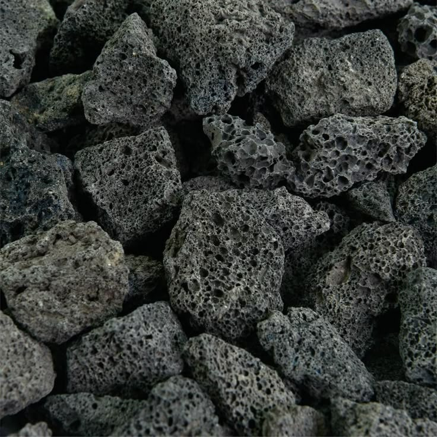

=<!DOCTYPE html>
<html lang="en">
<head>
<meta charset="UTF-8">
<meta name="viewport" content="width=device-width, initial-scale=1.0">
<title>Basalt</title>
<style>
* {
  margin: 0;
  padding: 0;
  box-sizing: border-box;
  font-family: 'Helvetica Neue', Helvetica, Arial, sans-serif;
}

body {
  background-color: #000;
  color: #fff;
  line-height: 1.6;
  text-align: center;
}

.header {
  width: 100%;
  background-color: #fff;
  color: #000; 
  display: flex;
  justify-content: space-between;
  align-items: center;
  padding: 18px 40px;
  position: fixed;
  top: 0;
  left: 0;
  z-index: 10;
}

.header .logo img {
  height: 20px;
  width: auto;
  display: block;
}

.header nav a {
  color: #000;
  text-decoration: none;
  margin-left: 30px;
  font-size: 14px;
  font-weight: 500;
}

.content-section {
  padding-top: 100px;
  width: 90%; 
  max-width: 900px;
  margin: 0 auto;
}

.content-section > h2:first-of-type {
    padding-top: 100px; 
}

.content-section h2 {
  font-size: 48px;
  font-weight: 800;
  margin-top: 0; 
  margin-bottom: 20px;
}

.content-section h3 {
  font-size: 32px;
  font-weight: 500;
  margin-bottom: 20px;
}

.content-section h3:nth-of-type(1) {
    font-size: 28px; 
    margin-bottom: 50px;
}

.point-color {
  color: #91CAFF;
  font-weight: 600;
}

.content-section img[width="268"] {
  display: block;
  margin: 0 auto 30px auto;
}

.content-section p {
    font-size: 16px;
    margin-bottom: 120px;
    text-align: center;
}
.content-description { 
    font-size: 16px; 
    line-height: 1.8; 
    max-width: 700px;  
    margin: 100px auto 120px auto; 
    text-align: center;
}

.classification-heading h2 {
    margin-bottom: 10px;
}

.classification-heading h3 {
    font-size: 20px; 
    font-weight: 400;
    margin-bottom: 60px;
}

.content-section table {
  width: 100%;
  margin: 40px auto 120px auto;
  border-collapse: collapse;
  font-size: 16px; 
  text-align: center;
  color: #fff;
}

.content-section th, .content-section td {
  border: 1px solid #333;
  padding: 12px 8px;
}

.content-section th {
  background-color: #111;
  color: #fff;
  font-weight: 500; 
}

.basalt-cell {
  background-color: #91CAFF;
  color: #000;
  font-weight: 700;
  border-color: #91CAFF; 
}

.process-heading h2 {
    margin-bottom: 10px;
}

.process-heading h3 {
    font-size: 20px; 
    font-weight: 400;
    margin-bottom: 80px;
}

.full-width-image-container {
    width: 100vw; 
    position: relative;
    left: 50%;
    right: 50%;
    margin-left: -50vw; 
    margin-right: -50vw; 
    margin-bottom: 150px; 
}

.full-width-image-container img {
    display: block;
    width: 100%;
    height: auto;
}

.footer {
  background-color: #d9d9d9;
  color: #000;
  text-align: center;
  padding: 40px 0 20px;
}

.footer-inner {
  display: flex;
  flex-direction: column;
  align-items: center;
}

.footer-icon {
  width: 70px;
  height: 80px;
  object-fit: contain;
  margin-bottom: 20px;
}

.footer-nav a {
  color: #000;
  text-decoration: none;
  margin: 0 20px;
  font-size: 14px;
}

.footer-copy {
  font-size: 12px;
  color: #555;
  margin-top: 10px;
  border-top: 1px solid #bbb;
  display: inline-block;
  padding-top: 10px;
}
</style>
</head>
<body>

<header class="header">
  <div class="logo">
    <a href="index.html"> 
    </a>
  </div>
  <nav>
    <a href="origin.html">Origin</a>
    <a href="sites.html">Sites</a>
    <a href="use.html">Use</a>
    <a href="future.html">Future</a>
    <a href="basalt-code.html">Basalt code</a>
  </nav>
</header>

<div class="content-section">
    <h2>감각의 기록</h2>
    <h3>돌이 남긴 소리와 형태의 기록</h3>
    
    <p><span class="point-color">현무암(Basalt)</span>은 칼슘과 마그네슘이 풍부하여 CO₂와의 반응성이 높아 <span class="point-color">탄소광물화</span>에 적합한 지질 자원입니다.</p>
</div>
    <div class="process-heading">
        <h2>소리의 기록</h2>
        <h3>식어가는 마그마 소리</h3>
        <audio src="[Track 01] Lava Flow Sound Effect.wav" controls>
        </audio>
    </div>
    <br><br><br><br><br><br>
    <div class="classification-heading">
        <h2>표면의 기록</h2>
        <h3>돌이 남긴 시각적 흔적</h3>
        
        
        <br><br>
    </div>


<footer class="footer">
  <div class="footer-inner">
    
    <nav class="footer-nav">
      <a href="origin.html">Origin</a>
      <a href="sites.html">Sites</a>
      <a href="use.html">Use</a>
      <a href="future.html">Future</a>
      <a href="basalt-code.html">Basalt code</a>
    </nav>
    <p class="footer-copy">© 2025 Basalt. All rights reserved</p>
  </div>
</footer>

</body>
</html>